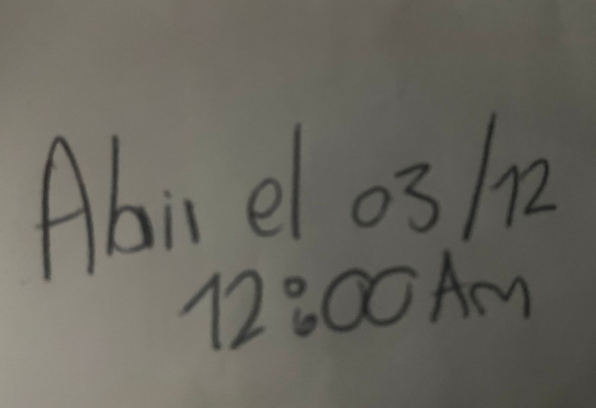

Hace mucho que no escribo algo así, pero aquí estoy, intentando ordenar el caos de lo que siento.
¿Extraño a alguien? No lo sé... Esta es la realidad, y no debería querer que fuera diferente, pero, a veces, me pregunto por qué tiene que ser así. Si te soy sincero, volví a abrir y leer esas cartas, como me lo pediste, que fueran abiertas el 03/12.
Creo que seguiré abriendolas por muchos años más. En ese instante, te extrañé. Extrañé tu boca, tus manos, tus labios, tu cuerpo. Extrañé tus palabras, tus letras, tus besos, tu olor, esas "lamidas" de ojos, y esas sonrisas que, aunque hoy todavía me río mucho, contigo eran diferentes.
Es cierto: ya no me conoces, ni yo a ti. Ya no sé si algunas historias o publicaciones son para mí. Aunque lleven nuestro corazón blanco, ya no estoy seguro. Dudo. No es como antes, cuando una sensación me envolvía y me decía que era para mí, aunque me lo negaras en la cara. Te conocía demasiado bien.
Te cuento algo: no he podido amar otra vez. Hiciste que desconfiara de todas, y al final, siempre termina siendo verdad. Tal vez eso sea bueno, pero también desearía volver a sentir lo cálido de un abrazo, de esos que son la muestra más pura y grande de afecto. Desearía sentirme rodeado por unos brazos que me hagan pensar que no me van a fallar.
Te odio. No en el sentido común de la palabra, pero te odio porque te llevaste muchas de mis primeras veces. Y porque quedaron tantas cosas por hacer, tantas experiencias por vivir. Te odio porque no pudimos seguir, porque no pude seguir sintiendo lo que me hacías sentir.
Hay tantas preguntas para ti que comienzan con un "por qué"... Y sé que tal vez no tengas respuestas, como solía ser desde el principio.
Ya se me están olvidando muchos momentos, pero no olvido tu rostro. Lo veo en otras personas, como si mi mente buscara una versión de ti en cada esquina.
Quiero llorar, pero no puedo. Y sí, es verdad: te enamoraste de otro yo. Tal vez ya no tenga sentido seguirte odiando. Después de todo, ni siquiera sabemos si seguirías enamorada de lo que soy hoy.
- Lina U
¿Me extrañas?